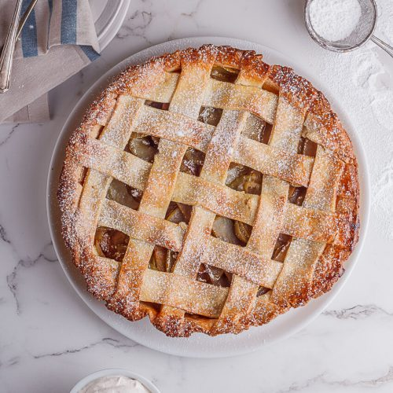

Apple Pie

Serve up this easy apple pie and enjoy the most classic dessert with family and friends. Whether you bake it for a holiday, a potluck or as a special weekend treat, this timeless recipe is guaranteed to spark joy.
Ingredients
Crust
- box (14.1 oz) refrigerated Pie Crusts (2 Count), softened as directed on box
Filling
- 6 cups thinly sliced, peeled apples (6 medium)
- 3/4 cup sugar
- 2 tablespoons all-purpose flour
- 3/4 teaspoon ground cinnamon
- 1/4 teaspoon salt
- 1/8 teaspoon ground nutmeg
- 1 tablespoon lemon juice
Steps
- Heat oven to 425°F. Place 1 pie crust in ungreased 9-inch glass pie plate. Press firmly against side and bottom.
- In large bowl, gently mix filling ingredients; spoon into crust-lined pie plate. Top with second crust. Wrap excess top crust under bottom crust edge, pressing edges together to seal; flute. Cut slits or shapes in several places in top crust.
- Bake 40 to 45 minutes or until apples are tender and crust is golden brown. Cover edge of crust with 2- to 3-inch wide strips of foil after first 15 to 20 minutes of baking to prevent excessive browning. Cool on cooling rack at least 2 hours before serving.